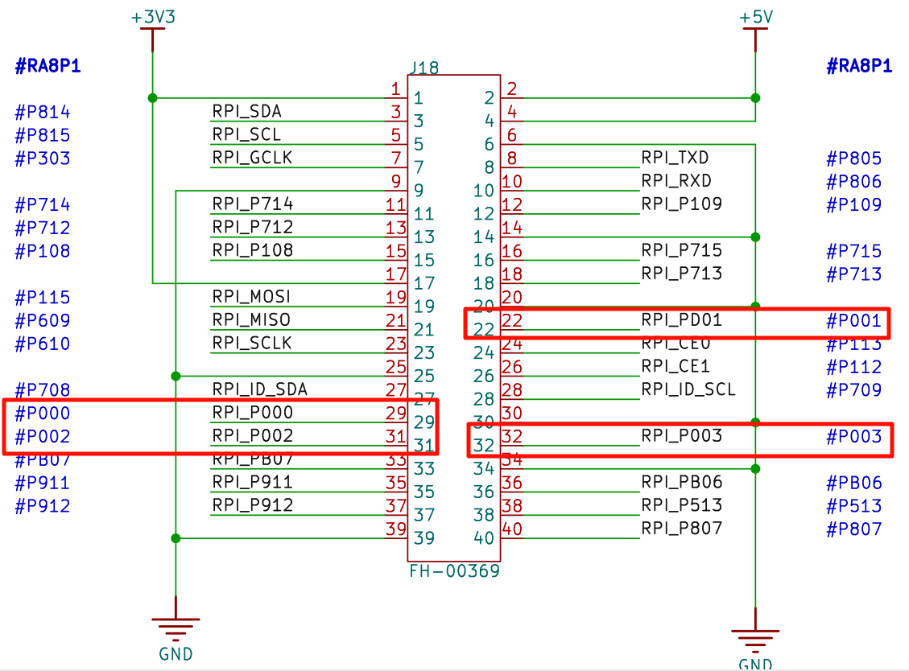
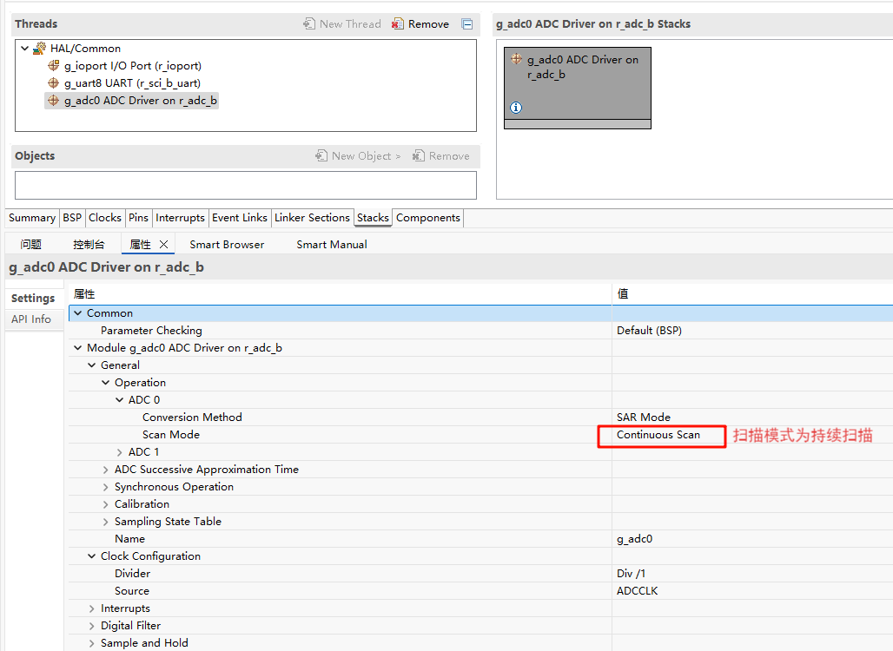
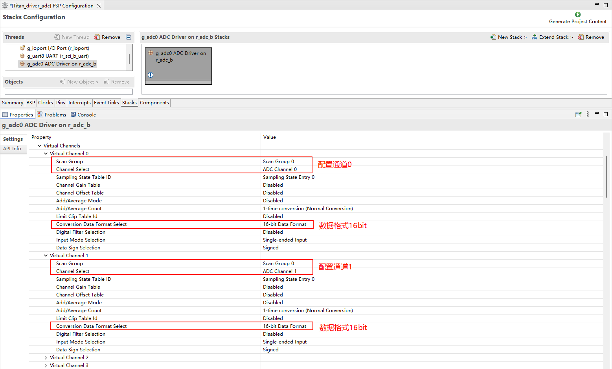
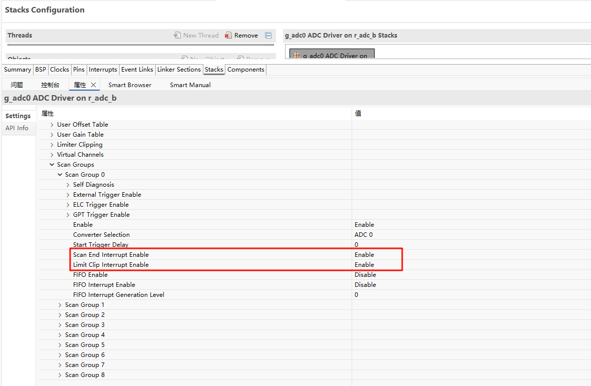
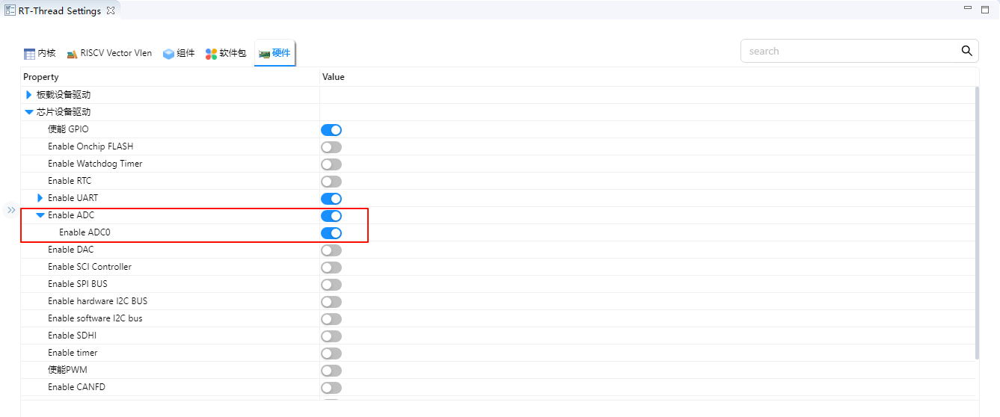
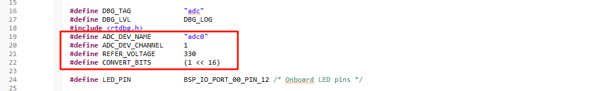

ADC Application Example Usage Instructions
English | Chinese
Introduction
This example demonstrates how to use the RA8 series MCU ADC (Analog-to-Digital Converter) on the Titan Board, combined with the RT-Thread ADC driver framework for analog signal acquisition and processing.
Main functionalities include:
Initializing the ADC hardware module
Configuring ADC channels, sampling time, and trigger mode
Reading analog signals through the RT-Thread ADC driver interface
Supporting single-shot sampling, continuous sampling, and hardware-triggered sampling
RA8P1 ADC Features
1. ADC Overview
ADC (Analog-to-Digital Converter) is a device or module that converts continuous analog signals into discrete digital signals. It is a core component in modern digital control systems, signal processing, and measurement systems.
Function: Converts continuous signals like voltage and current into digital values for processing by microcontrollers (MCU), DSPs, or FPGAs.
Key Parameters:
Resolution: The number of digital bits output by the ADC, representing the number of distinguishable levels. The RA8P1 has 16-bit resolution, i.e., 2^16 = 65,536 distinct levels.
Sampling Rate: The number of ADC samples per second, affecting the frequency range of signals that can be captured.
Input Range: The range of analog voltages the ADC can process.
Accuracy: Indicates how close the ADC output is to the actual input signal, affected by noise, nonlinearity, and offset errors.
2. ADC Working Principle
The ADC operation can be divided into several stages:
Sample & Hold (S/H)
Captures and holds the analog signal at the sampling instant to ensure stability during conversion.
RA8 series ADCs support adjustable sample-and-hold time, optimizing sampling for high-impedance signals.
Quantization
Divides the analog signal into discrete levels, each corresponding to a digital code.
A 16-bit ADC divides the input voltage range into 65,536 levels, with quantization precision:ΔV = VREF / 65536.
Encoding
Converts the quantized level into a binary code output.
RA8P1 ADC supports right-aligned / left-aligned data output for flexible data handling.
3. ADC Type and RA8P1 Features
This MCU contains two units of Noise-Shaping SAR-type A/D converters (ADC16H) that is the hybrid architecture with
features of SAR-type and Delta-Sigma modulation-type. The A/D converter unit 0 (ADC0) can select up to 15 channels of
analog inputs. The A/D converter unit 1 (ADC1) can select up to 15 channels of analog inputs. The temperature sensor,
internal reference voltage, VBATT 1/6 voltage monitor output, and D/A converters can be A/D-converted by A/D converter
unit 0 or unit 1. A/D conversion data can be selected from 16-bit, 14-bit, 12-bit, and 10-bit length data formats.
The ADC16H has the following features:
● Resolution: Up to 16-bit
● Fast conversion: Up to 6.25 Msps (0.16 µs per channel) (when A/D conversion clock ADCLK = 50 MHz)
● Input channels: Up to 23 analog input channels
● Support single-ended input or differential inputs
● Self-calibration function
● Built-in channel-dedicated sample-and-hold circuit (S&H)
SAR ADC Working Flow:
Sample and hold the input voltage
Stepwise comparison with DAC output
Adjust the binary code according to the comparison result
Output the digital value
4. Key ADC Parameters
Resolution
RA8P1 16-bit ADC: theoretical minimum detectable voltage ΔV = VREF / 65536
Example: VREF = 3.3V, ΔV ≈ 0.00005 V ≈ 50 μV
Sampling Time
Determines input voltage stability and ADC error.
High-impedance signals require longer sampling time to avoid errors.
Linearity
INL (Integral Nonlinearity): Cumulative error, deviation from ideal straight line
DNL (Differential Nonlinearity): Step size error between adjacent codes
Noise and Accuracy
System noise affects low-level resolution. The effective resolution in 16-bit mode is usually slightly below 16 bits (e.g., 15 effective bits).
Input Impedance
High-impedance signals can be sampled directly; low-impedance or high-speed signals may require buffering.
5. Typical RA8P1 ADC Applications
Industrial Measurement: Temperature, pressure, and flow sensor acquisition
Motor Control: Current and voltage sampling for closed-loop control
Signal Processing: Audio acquisition, vibration monitoring
Data Logging: Multi-channel high-speed sampling for storage or transmission to a host
Hardware Description
As shown in the following schematic diagram, there are 4 ADC channel interfaces on the Titan Board, namely channels 0, 1, 2 and 3 of adc0.

FSP Configuration
Step 1: Open FSP and import the XML configuration file (or directly click the FSP link file in RT-Thread Studio).
Step 2: Create a new
r_adcstack, configure the ADC device, and select the channels to be used.



Step 3: Save and click “Generate Project”. The generated code will be saved in
hal_data.c.
RT-Thread Settings Configuration
Enable ADC0:

Example Code Description
The ADC source code is located in /project/Titan_driver_adc/src/hal_entry.c. The macros used are defined as follows:

The specific function is to sample the analog voltage from ADC0 channel 1 every 1000ms and perform a conversion. The code is as follows:
static int adc_vol_sample()
{
rt_adc_device_t adc_dev;
rt_uint32_t value, vol;
rt_err_t ret = RT_EOK;
adc_dev = (rt_adc_device_t)rt_device_find(ADC_DEV_NAME);
if (adc_dev == RT_NULL)
{
rt_kprintf("adc sample run failed! can't find %s device!\n", ADC_DEV_NAME);
return RT_ERROR;
}
ret = rt_adc_enable(adc_dev, ADC_DEV_CHANNEL);
while(1)
{
value = rt_adc_read(adc_dev, ADC_DEV_CHANNEL);
rt_kprintf("the value is :%d \n", value);
vol = value * REFER_VOLTAGE / CONVERT_BITS;
rt_kprintf("the voltage is :%d.%02d \n", vol / 100, vol % 100);
rt_thread_mdelay(1000);
}
ret = rt_adc_disable(adc_dev, ADC_DEV_CHANNEL);
return ret;
}
In the example, the while loop calls adc_vol_sample every 1000ms.
Compilation & Download
RT-Thread Studio: In RT-Thread Studio’s package manager, download the Titan Board resource package, create a new project, and compile it.
After compilation, connect the development board’s USB-DBG interface to the PC and download the firmware to the development board.
Run Effect
The effect when using ADC0 channel 1 to sample a 1.8V voltage is shown below: